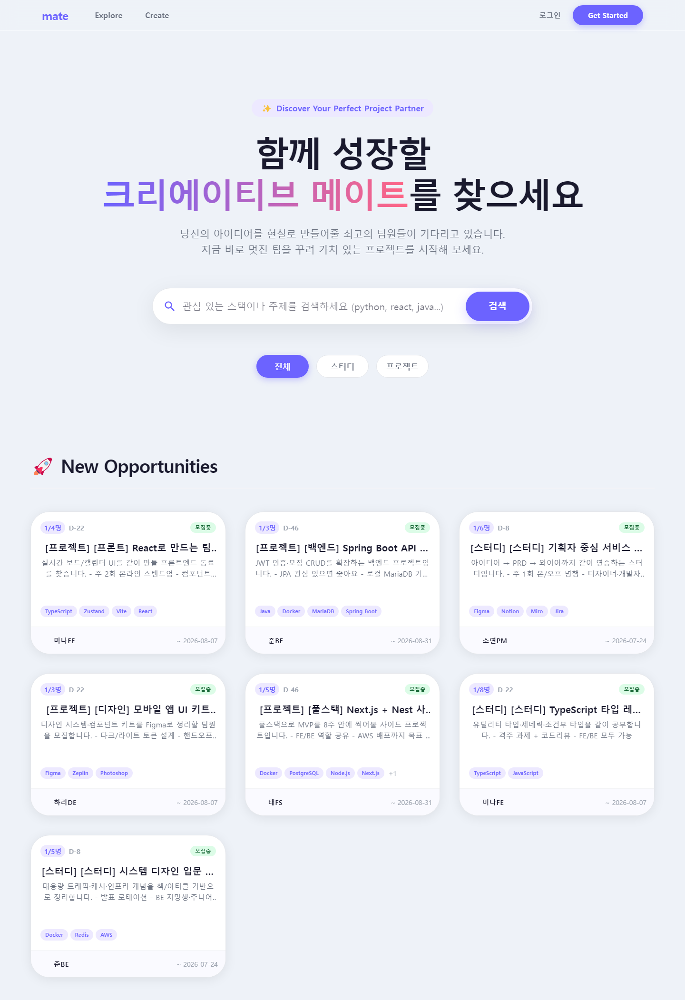

- 플랫폼
- Web
- 개발기간
- 8일
- 개발인원
- 6명
- 담당역할
-
- 회원가입·로그인·계정 찾기·회원정보 중복 확인 기능 구현 (기여도 100%)
- 모집글 CRUD·재모집 및 모집중·마감임박·마감 상태 로직 (기여도 90%)
- 팀 전용 게시판·댓글, 지원서, 마이페이지(내 모집·신청) (기여도 80%)
- MSW 목업 서버·API 연동(Axios 인터셉터)·Zustand 상태관리·MUI 테마 (기여도 90%)
- 백엔드 모집글·게시판 페이징·필터링 일부 (기여도 20%)
모집부터 팀 소통까지, 한 플랫폼에서
프로젝트·스터디 팀원 모집이 오픈채팅·에브리타임에 흩어져
지원자와 합류 현황을 따로 관리해야 했다.
그래서 모집부터 지원·팀 확정까지 한곳에서 관리하고,
매칭된 팀에는 전용 게시판을 제공하는 플랫폼을 만들었다.
- 모집 관리 작성·마감·재모집
- 지원·매칭 지원서·수락·거절
- 팀 공간 멤버 전용 게시판·댓글
개발 환경
언어
프레임워크
데이터베이스
빌드
IDE
라이브러리